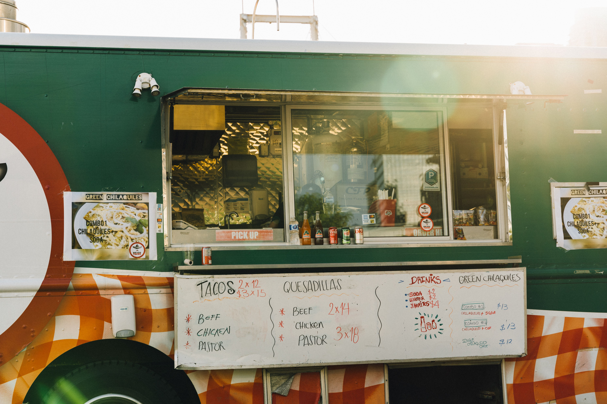

Best Seller
Best Seller
Carne Asada Tacos
$4.25Grilled marinated skirt steak, white onion, cilantro, house salsa roja, double corn tortillas.
Sabor Street Kitchen started as a single taco cart at the Riverside Night Market and grew into a full storefront, without losing the char, the crowd, or the 1am cravings. Handmade tortillas, slow-smoked meats, and salsas built from a family recipe box, every single night.
A handful of the orders that keep the line out the door. See the full menu and build your own order any time.
Best Seller
Grilled marinated skirt steak, white onion, cilantro, house salsa roja, double corn tortillas.

Charred sweet corn, chili-lime crema, cotija cheese, tajin dust. A market classic.
 New
New
Crispy griddled tacos, melted oaxaca cheese, slow-braised birria, side of consommé for dipping.

Rotating fresh fruit waters. Ask what's pouring tonight. Watermelon-mint is a regular.

What began as a folding table and a propane grill at the Riverside Night Market is now a proper storefront kitchen, same recipes, same char, same late hours. Every tortilla is still pressed by hand and every salsa still gets made from scratch, daily.
Read Our Full Story"The quesabirria alone is worth the drive across town. Consistently the best tacos in the city, hands down."
"Ordering online for pickup is dangerously easy. I've never waited more than ten minutes."
"They remembered my order was dairy-free after one visit. That's the kind of place this is."